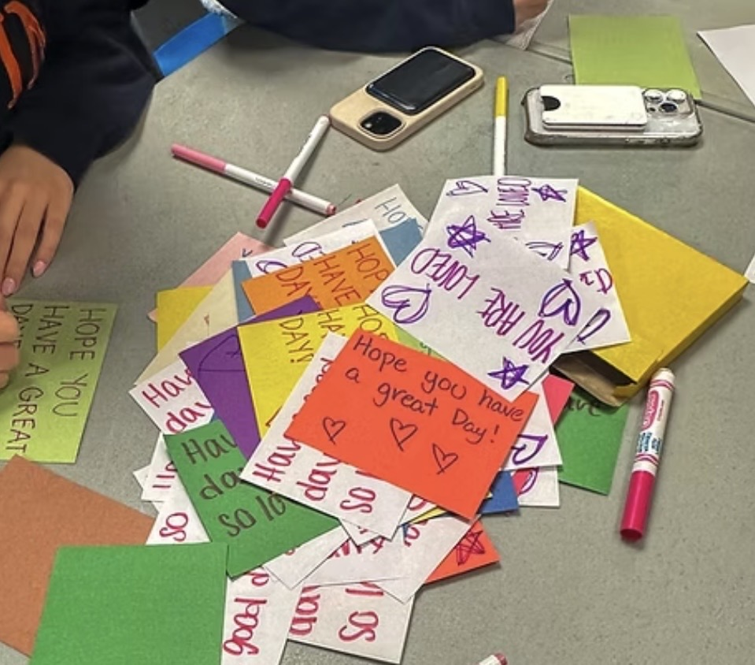
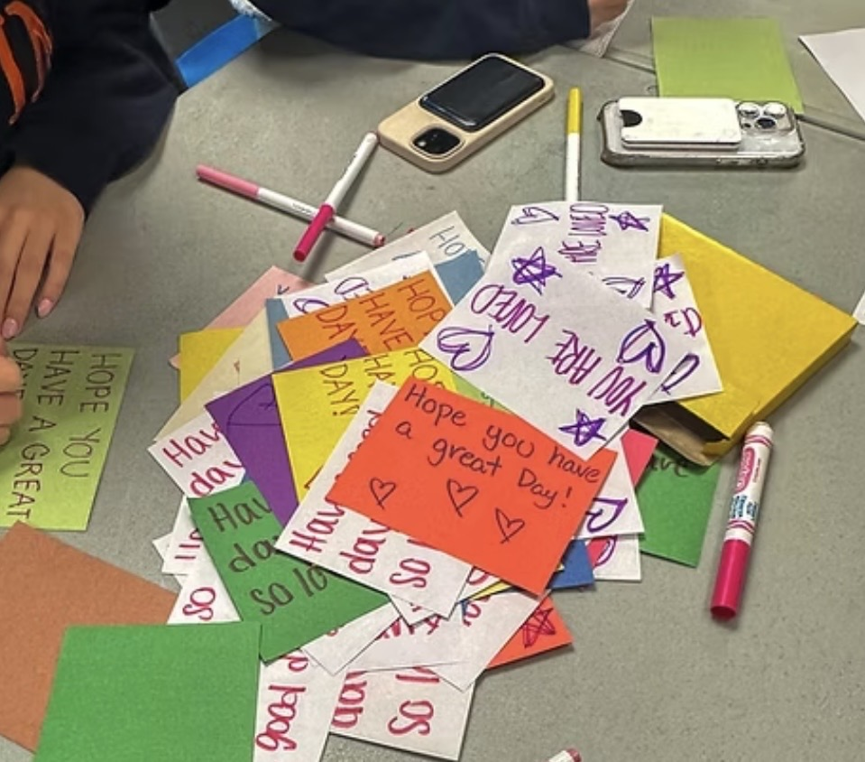
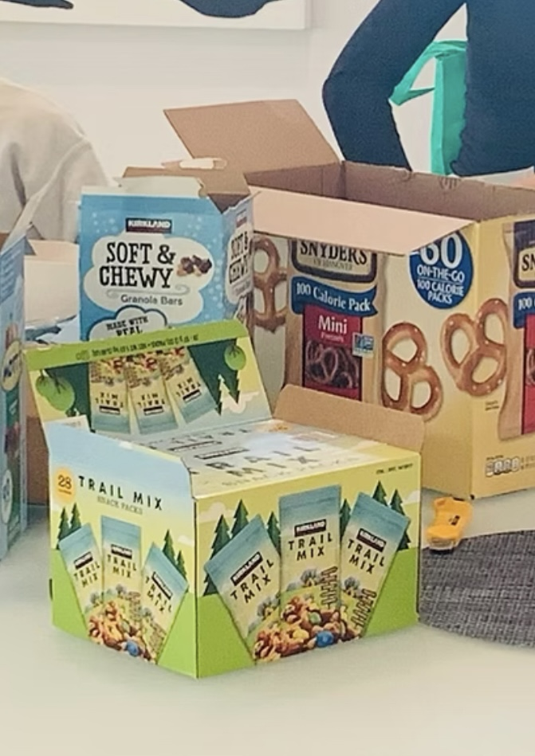
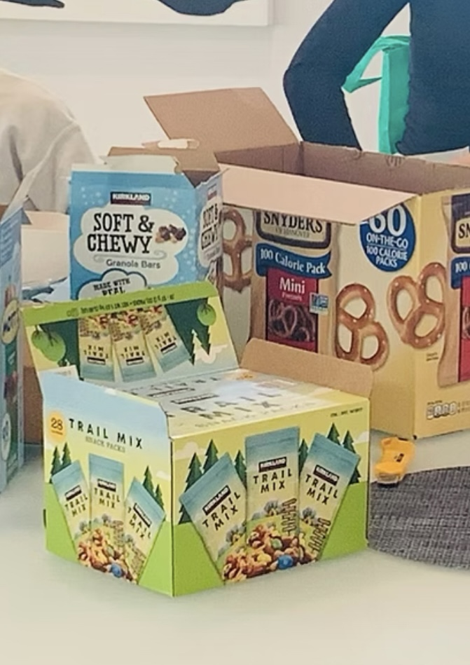
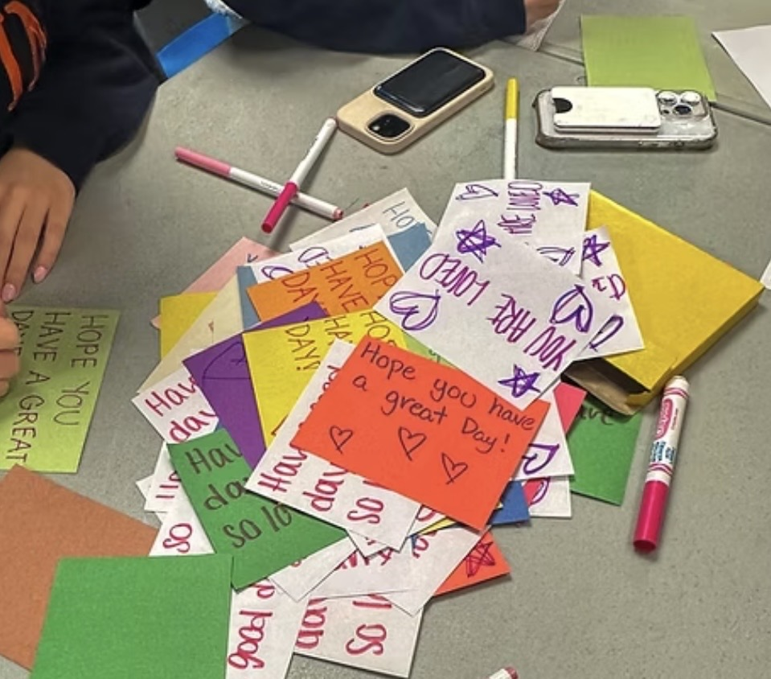
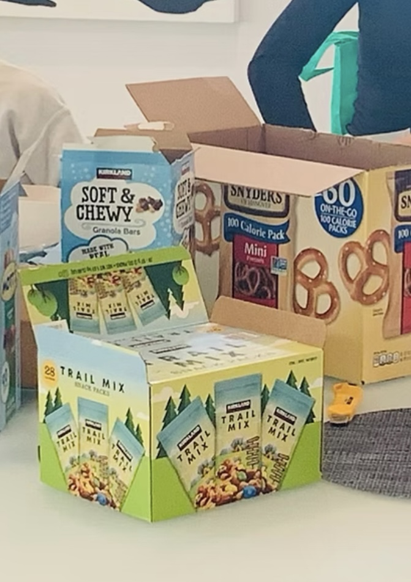

Photo Gallery
Care Bags & Events
A glimpse into the work happening across our chapters.


 


 



A glimpse into the work happening across our chapters.


Created care bags in your community? We'd love to feature your work! Send us your photos and be part of our global gallery.
Email your pictures to team@seenwithcare.org
Contact Us